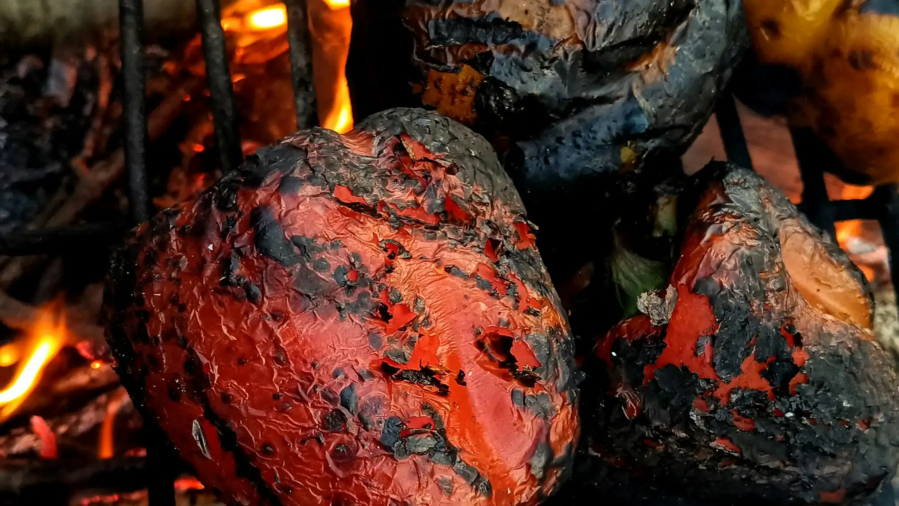
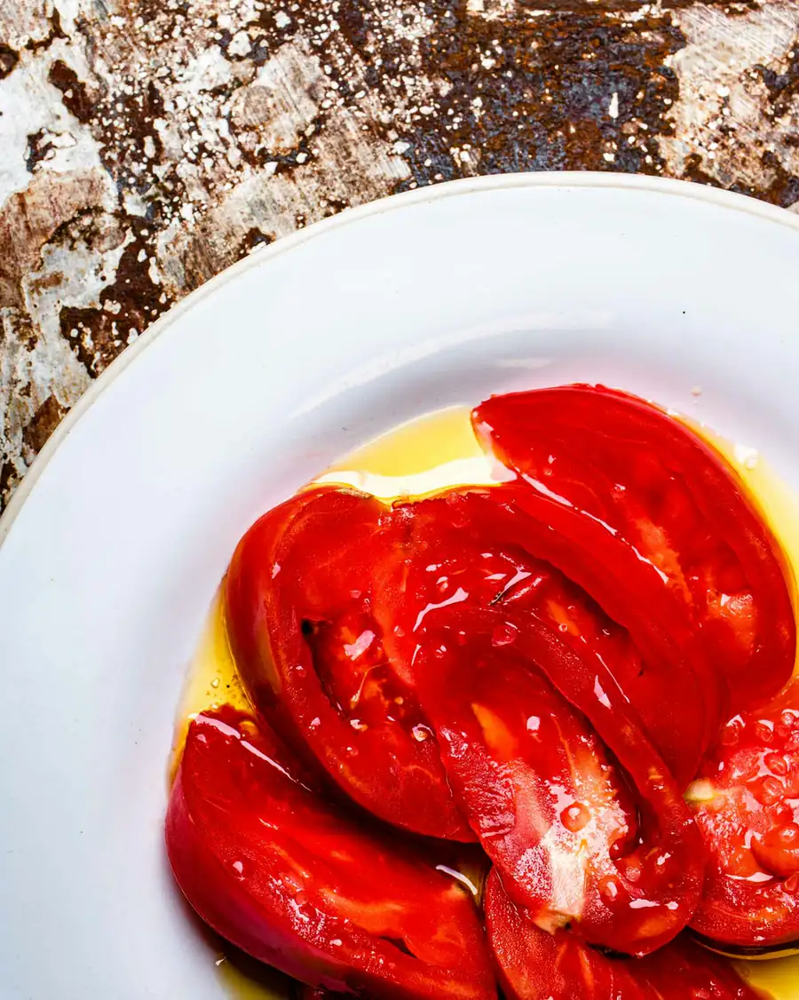
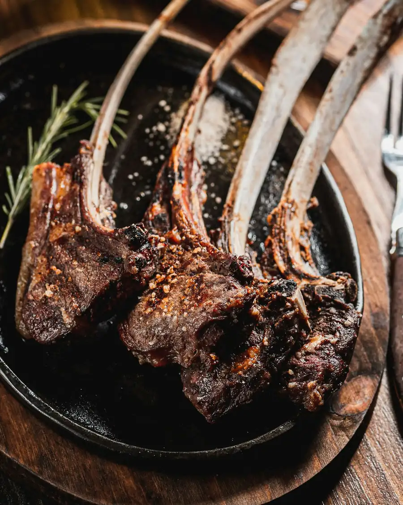
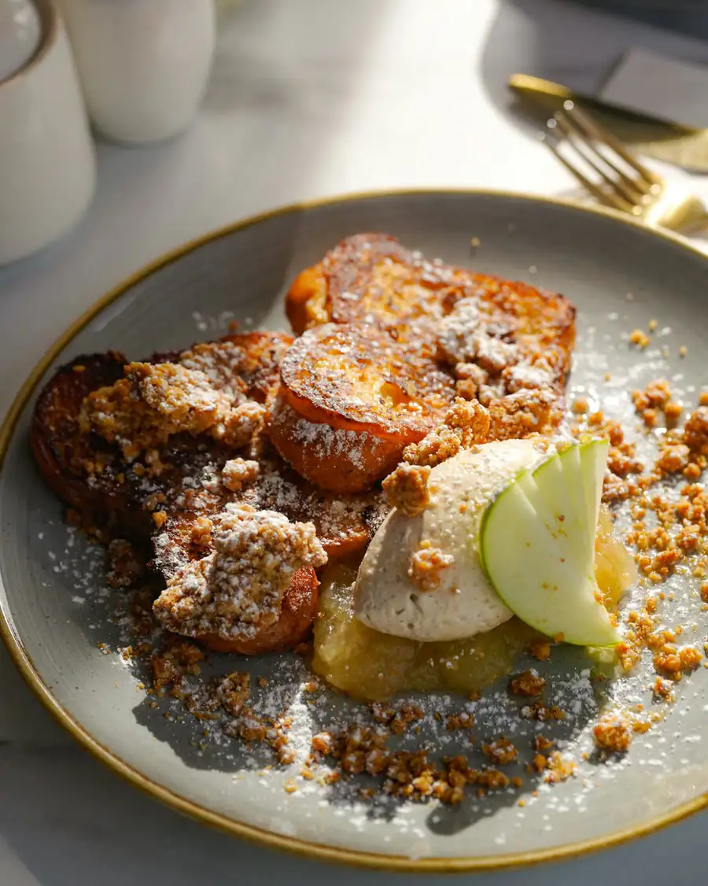
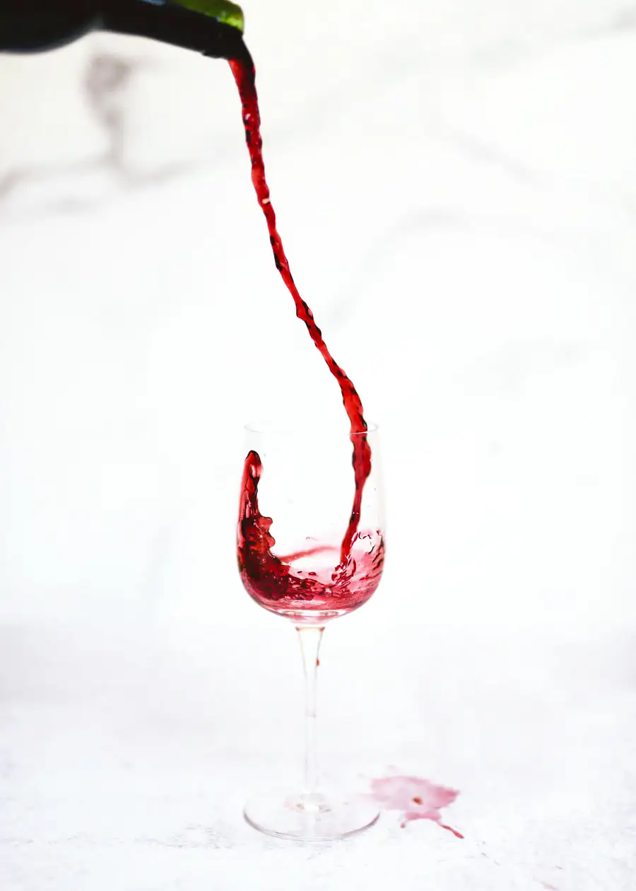

Foto de muestra
Brasa lenta y huerta de aquí.
Casa de comidas en la calle San Juan, en el casco antiguo de Logroño.
Cerrado ahora
Encendemos cada servicio con sarmiento de viña.
El humo es más dulce que el del carbón, y se nota en la verdura de la ribera del Ebro, en el pescado de lonja y en la carne riojana.
Sabemos de qué huerta viene cada pimiento y de qué barco cada merluza. Si preguntas, te lo contamos en la mesa. Carta corta y sobremesa sin reloj.
La carta.
Corta y de temporada, en tres tiempos. Los precios llevan el IVA incluido.



Para empezar
Pimientos del cristal a la brasa12 €Asados enteros, pelados a mano y aliñados con ajo y aceite de arbequina.
Alcachofas confitadas14 €Con yema curada y virutas de jamón. Solo en temporada.
Croquetas de chuleta11 €Seis unidades, con la carne de la brasa del día anterior.
De la brasa
Chuletillas al sarmiento22 €Cordero lechal, sal gorda y nada más. Con patatas a lo pobre.
Merluza de pincho24 €Lomo a la brasa con pilpil ligero y pimiento choricero.
Chuletón de vaca vieja62 €/kgMadurado 45 días. Para compartir entre dos o tres.
Para terminar
Torrija caramelizada7 €Con helado de leche merengada.
Queso camerano8 €De cabra, con membrillo casero y nueces.
Las fotos son de muestra, no de nuestros platos. Si tienes alguna alergia o intolerancia, avísanos al reservar y te decimos qué lleva cada cosa.
Cuarenta vinos que no salen en las guías.
De bodegas pequeñas de Rioja, muchos por copas. Si no conoces ninguno, te ponemos a probar dos antes de elegir.

Ven a vernos.
Horario
Cerrado ahora
Hoy: consulta la tabla
| Martes a juevesHoy | 13:30–16:00 |
|---|---|
| Viernes y sábadosHoy | 13:30–16:00 y 20:30–23:30 |
| DomingosHoy | 13:30–16:30 |
| LunesHoy | Cerrado |
Dónde
Calle San Juan, 1426001 Logroño, en el casco antiguoReservar mesa
Se reserva por teléfono o por WhatsApp. Esta muestra no publica números porque el restaurante no existe: en la web real irían aquí y en la barra del móvil, a un toque.